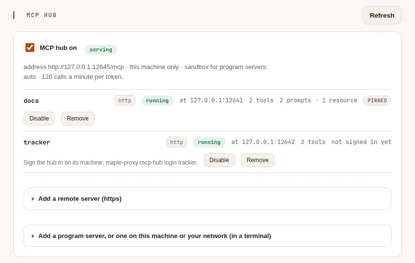
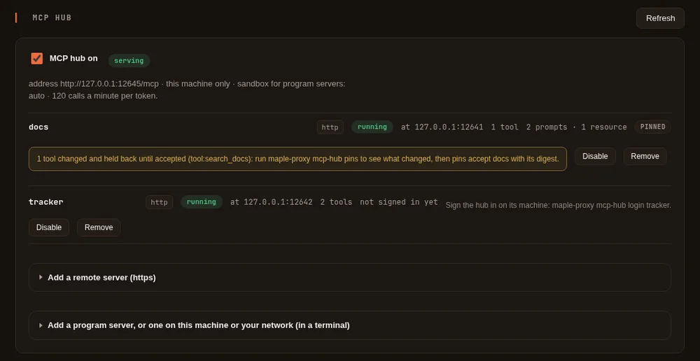

The proxyFeatures38 min read
MCP hub #
On this page
- In plain words
- How it works
- Turn it on
- Point your tools at it
- Settings
- Who may use which tools
- Servers that ask you to sign in
- More ways to limit access
- Prompts and resources
- Pinning tools
- When a server's tools change
- Cost and limits per server
- Finding A2A agents from an MCP client
- Letting the proxy run tools for a chat request
- Other ways in
- Upgrading from 2.x
- Security
- Reaching cloud metadata or link-local services
- Running it as a service of its own
- Running it in a container
- Limits
- Commands
- See also
The proxy can run your MCP servers once and offer all of their tools at one address. Maple Harness, Claude Code, OpenCode and any other tool that speaks MCP then point at that address instead of each starting its own copy of every server.
Off by default, and stable since 3.0
While it is off nothing listens, nothing starts and nothing changes: the proxy and the agent work exactly as without it, and the agent's own MCP servers are unaffected. Since 3.0 it is no longer experimental: its settings, commands and endpoints are kept from one release to the next like the rest of the proxy's (see Upgrading from 2.x).
In plain words #
- What it is. The proxy runs your MCP servers (the add-ons that give an agent extra tools) once, and every tool you use reaches them at one address.
- Why you want it. One copy of each server instead of one per tool, one place to limit what each person may call, and one place to sign in to hosted servers: once for everyone, or each person for themselves.
- The clicks. On the setup page, Set up more, then MCP hub, Set up: add a remote
server by its
httpsaddress (a token for it is kept in the secret store), and turn the hub on. A program server, or one on this machine or your network, is added in a terminal (maple-proxy mcp-hub add), because a program on this machine can reach the setup page too; the page writes the command out for you to copy. The page then shows each server and its tools, and switches them on and off.


How it works #
- You list the servers in
config.yamlundermcp_hub.servers, in the same shape as the agent'smcp_servers: a program the proxy starts (stdio), or a server it reaches by URL (httporsse). - The proxy serves one MCP endpoint,
http://127.0.0.1:11545/mcpby default (Streamable HTTP). - Each tool is named
<server>__<tool>: agithubserver'screate_issueisgithub__create_issue. - A server can be limited to some of its tools, and each person can be limited to some of the hub's tools.
- A server that stops is started again, waiting a little longer each time; all of them stop with the proxy.
Turn it on #
- Add a server, a program the proxy starts or a server it reaches by URL (
maple-proxy mcp-hub add). - Turn the hub on (
maple-proxy mcp-hub enable). - Make a token for each tool that will use it (
maple-proxy mcp-hub token <label>); it is shown once. - Check it (
maple-proxy mcp-hub status): each server, its state and its tools. - Point your tools at it (below).
From a terminal:
maple-proxy mcp-hub add files -- npx -y @modelcontextprotocol/server-filesystem /home/me/projects
maple-proxy mcp-hub add docs --url https://mcp.example.com/mcp --header "Authorization=Bearer \${secret:docs/token}"
maple-proxy mcp-hub enable
maple-proxy mcp-hub token my-laptop
maple-proxy mcp-hub statustoken prints an access token once: every tool that uses the hub sends it (see below).
or write it in config.yaml:
mcp_hub:
enabled: true
servers:
- name: files
command: npx
args: ["-y", "@modelcontextprotocol/server-filesystem", "/home/me/projects"]
- name: docs
url: https://mcp.example.com/mcp
headers:
Authorization: "Bearer ${secret:docs/token}"
tools: ["search*", "fetch"]A running proxy picks the change up within a few seconds; there is nothing to restart. The setup page's
MCP hub page shows each server, its state and its tools, and switches the hub or a server on and off. It also adds
and removes remote servers: an https address on the internet, with header values you type there (kept as new
secrets, named mcp-hub/<server>/<header>, and deleted with the server). It never adds a program server, a server on
this machine or a private network, or a header that names one of your existing secrets (${secret:…}), and never
removes a program server: those need a terminal, and the page writes the maple-proxy mcp-hub add command out to copy.
Servers added on the page start off without a page password
Without a page password, any program on this machine can use the setup page, so a server added there starts
off: turn it on with maple-proxy mcp-hub enable NAME in a terminal, or set a page password (Page
password, Protect this page) and turn it on from the page.
Point your tools at it #
Each tool sends the token from maple-proxy mcp-hub token as Authorization: Bearer <token>. Keep it in an
environment variable or your tool's secret store rather than in a file you share.
Maple Harness #
In config.yaml:
harness:
mcp_servers:
- name: hub
url: http://127.0.0.1:11545/mcp
allow_private: true
headers:
Authorization: "Bearer ${env:MAPLE_HUB_TOKEN}"The tools appear as mcp__hub__<server>__<tool> and ask for approval like any other tool. To allow one without
asking, name it in a rule, for example - {decision: allow, pattern: mcp__hub__files__read_file}.
Maple Harness sends the token to the hub's address on this machine only after the hub proves, on that connection, that it is your own (the same check as for your proxy; see Connect the harness to a proxy). While the hub is off, a program that takes its port gets nothing. Other tools, such as Claude Code, do not make this check.
Claude Code #
claude mcp add --transport http maple-hub http://127.0.0.1:11545/mcp --header "Authorization: Bearer $MAPLE_HUB_TOKEN"or in .mcp.json:
{
"mcpServers": {
"maple-hub": {
"type": "http",
"url": "http://127.0.0.1:11545/mcp",
"headers": { "Authorization": "Bearer ${MAPLE_HUB_TOKEN}" }
}
}
}OpenCode #
In opencode.json:
{
"$schema": "https://opencode.ai/config.json",
"mcp": {
"maple-hub": {
"type": "remote",
"url": "http://127.0.0.1:11545/mcp",
"headers": { "Authorization": "Bearer {env:MAPLE_HUB_TOKEN}" },
"enabled": true
}
}
}Settings #
| Key | Default | What it does |
|---|---|---|
mcp_ | off | Turns the hub on |
mcp_hub.listen | 127.0.0.1:11545 | Where the endpoint is served (path /mcp) |
mcp_ | off | Lets tools on this machine use the hub without a token. Anything that runs on this machine, a sandboxed command included, could then call every tool |
mcp_ | none | The servers: name, then command, args and env for a program, or url, type (http or sse), headers, allow_private and allow_insecure for a server reached by URL, as for the agent's mcp_servers |
mcp_ | every tool | Only these tools of the server, by its own names; * matches any run of characters |
mcp_ | off | Keeps the server configured but not started |
mcp_ | auto | How a program the hub starts is contained: auto, strict or off, as for the agent's sandbox |
mcp_ | off | In the container image only: starts stdio servers without a sandbox. Off, a stdio server there is refused (the image has no sandbox); see Running it in a container |
mcp_ | 120 | Tool calls a minute per token (per caller on this machine without one) |
mcp_hub.people | none | Per-person lists of the hub's tools each person may see and call |
mcp_hub.teams, mcp_hub.tokens | none | Per-team and per-token lists, on top of the per-person ones (see More ways to limit access) |
mcp_ | none | Named lists of tools that @name stands for in the other lists |
mcp_ | off | Lets a client name the person it acts for (X-Maple-End-User) |
mcp_ | none | How the hub signs in to a remote server (see Servers that ask you to sign in) |
mcp_, resources | off | Also offers the server's prompts and resources |
mcp_ | off | Freezes the server's tools as first seen (see Pinning tools) |
mcp_ | none | Per tool, the only arguments a call may carry |
mcp_, tool_costs | none | What a call costs, in US dollars, as you set it |
mcp_ | none | Calls to this server a minute per caller, on top of the hub's limit |
mcp_ | refuse | Whether a request passed on to a provider may name MCP servers or connectors for the provider to reach (see Providers' own MCP connectors) |
mcp_ | off | Lets a chat request have the proxy run hub tools (see Letting the proxy run tools for a chat request) |
mcp_, mcp_ | none | A certificate for serving off this machine |
mcp_ | off | Serves off this machine over plain HTTP; tokens then cross the network unencrypted |
Server names are letters, digits and dashes. env and headers values may be ${secret:name} or ${env:NAME}
references, looked up when the server starts, so the keys are never written in the file.
Who may use which tools #
With people set up, each access token belongs to a person, and mcp_hub.people says which of the hub's
tools each person may see and call:
mcp_hub:
people:
alice: ["files__*", "docs__*"]
bob: ["docs__search"]
local: ["*"]local is whoever calls from this machine without a token (only with loopback_without_token), unattributed a token tied to no person, and * anyone
not listed. With no people lists, everyone may use every tool the hub offers. Once there is a list, someone with
no entry (and no * entry) gets none. A person only sees the tools they may call.
Servers that ask you to sign in #
Hosted MCP servers often want a sign-in with an account instead of a fixed token. The hub signs in to them in one of
four ways, set per server under auth:
- One sign-in for everyone (
type: oauth). You sign the hub in once, in a terminal on the hub's machine, and everyone who may use the server works through that one account. - Each person for themselves (
type: oauth,per_person: true). Every person signs in with their own account, and their calls go out as them. Someone who has not signed in is told how to, and nobody can use another person's sign-in. - The hub as an app (
type: client_credentials). For services that give you a client id and secret for a machine, not a person: no browser at all. - The hub acting for each person (
type: token_exchange). For services whose sign-in server can trade a token that says who someone is for an access token of theirs: every person's calls go out as them, and nobody opens a browser. See Acting for each person without a browser.
A fixed token still goes in headers (Authorization: "Bearer ${secret:name}", a basic-auth header, or an API key
header), as before.
In plain words #
- One account for the team: add
auth: {type: oauth}to the server, then runmaple-proxy mcp-hub login NAMEon the hub's machine and approve in the browser. The hub's MCP hub page andmaple-proxy mcp-hub statusshow the server as needs a sign-in until then, and running a few seconds after. - Everyone their own: add
per_person: true. Each person runs, on their own machine,maple-proxy mcp-hub login NAME --hub https://hub.example.com:11545with their hub token inMAPLE_HUB_TOKEN, and approves in their browser. The server's tools then appear in their sessions.
Technically #
mcp_hub:
servers:
- name: tracker # one sign-in for everyone
url: https://mcp.tracker.example/mcp
auth: {type: oauth}
- name: wiki # each person signs in
url: https://mcp.wiki.example/mcp
auth:
type: oauth
per_person: true
- name: billing # an app registered beforehand
url: https://mcp.billing.example/mcp
auth:
type: oauth
client_id: maple-hub
client_secret: ${secret:billing/client-secret}
issuer: https://auth.billing.example # where the secret may go (needed with a secret)
callback_port: 8765 # when the app's return address must match exactly
- name: reports # the hub as an app, no person
url: https://mcp.reports.example/mcp
auth:
type: client_credentials
client_id: maple-hub
client_secret: ${secret:reports/client-secret}
token_url: https://auth.reports.example/token
scopes: [reports.read]- Sign-in follows MCP's authorization: OAuth 2.1 with PKCE, the server's and the authorization server's metadata, and
automatic client registration where the server offers it (or the
client_idyou give). client_secretis always a${secret:…}or${env:…}reference: a secret written intoconfig.yamlis refused, as is one that names another feature's credential. It is only ever sent to an address you named:token_urlforclient_credentials,issuerfor anoauthapp, never to one an MCP server's own metadata points at.- Sign-ins are kept in the proxy's secret store (the keyring, or its encrypted file), never in
config.yaml, and renewed on their own. A sign-in is for the server's address: change theurland the server asks for a sign-in again. - With
per_person, each person's tools are listed from their own connection and shown to no one else (accounts can differ). Signing in needs the person's own hub token. The person's browser comes back to their own machine, which hands the result to the hub over the same token they use for the hub; a sign-in started with one token cannot be finished with another, and an answer is used once and expires after ten minutes. Calls from a client acting for someone else (end_user_header) still use the caller's own sign-in. maple-proxy mcp-hub logout NAME(orlogout NAME --hub URLfor your own) forgets a sign-in.- Only servers reached over Streamable HTTP (
type: http) sign in.
Acting for each person without a browser #
In plain words #
Some sign-in services (identity providers such as Keycloak, Okta or Microsoft Entra, set up for it) can trade one
token for another: "this is Alice, says the hub; give me a token for the tracker in her name". With
type: token_exchange, the hub does that for every call: each person's calls reach the server as them, with their
own account's rights, and nobody signs in through a browser or keeps a sign-in on the hub. People who use the hub do
nothing new: their hub token says who they are.
You set it up once:
- Register the hub as an app with the sign-in service, allowed to exchange tokens, and note its client id and secret.
- Run
maple-proxy mcp-hub jwkson the hub's machine, as the user the hub runs as. It prints the hub's public key; tell the sign-in service to trust tokens signed with it, under the issuer name you pick for this hub (subject_issuer), as an external issuer (often called a "trusted token issuer" or "identity provider"). Let it accept them only from the hub's app and only for the people and services you mean. - Add the server with
auth.type: token_exchange, as below.
Technically #
mcp_hub:
servers:
- name: tracker
url: https://mcp.tracker.example/mcp
auth:
type: token_exchange
client_id: maple-hub
client_secret: ${secret:tracker/hub-secret}
token_url: https://auth.example/oauth2/token
subject_issuer: https://hub.example.com # how the sign-in service knows this hub
audience: tracker # optional
scopes: [tracker.read] # optional- This is OAuth 2.0 Token Exchange (RFC 8693). For each person, the hub signs a short-lived JWT (ES256, two
minutes, a fresh
jtieach time) withiss=subject_issuer,sub= the person's id from your people,aud=token_url, andclient_id= the app's id. It sends it totoken_urlas thesubject_token(typeurn:ietf:params:oauth:token-type:jwt), withresource= the server's address,audienceandscopewhen set, and the app's id and secret (HTTP basic). The access token that comes back is used for that person's calls until it expires (at most an hour), then exchanged again. subject_issueris required: give each hub its own (its address is a good choice), so a sign-in service that trusts several hubs tells them apart.- The person's id is what the authorization server sees: map it to an account there (person ids are often user
names or e-mail addresses). Ids are compared exactly:
Aliceandaliceare two people here, so check how the sign-in service matches them. The proxy says so at start (aconfig.warningevent) andmaple-harness doctornames such pairs.
Who decides whose name the hub acts in
Whoever can add people, or tie a token to one: the people who edit config.yaml or the People settings, approve
developer sign-ins, or run a parent hub whose people this one inherits. Give those rights
only to people you would trust with every account the hub exchanges tokens for.
- The hub exchanges a token only for a server the person's lists let them use.
- Only the proxy's owner and admins configure hub servers (in
config.yaml, or a terminal on the hub's machine): a server's headers may name a provider's key, for an MCP server that calls a model API itself. - Only callers tied to one of your people are acted for. A token tied to no person, or a caller on this machine without a token, gets none of the server's tools.
client_secretfollows the same rules as above (a reference, never the value), and the app's secret and the person's subject token go only totoken_url, never to an address the MCP server's metadata names.token_urlmust be https, unless it is on this machine or the server hasallow_insecure.- The hub's signing key is made on first use and kept in the secret store of the user the hub runs as (a store that
would forget it at the next start is refused);
maple-proxy mcp-hub jwksshows its public half (a JSON Web Key Set, key id = its RFC 7638 thumbprint) and never the private key. Keep the secret store when you move or rebuild the hub, or register the new key. A server'sheadersandenvcan never name it, nor any other of Maple's own secrets: such a server is not started. - Each person's tools are listed from their own connection, as with
per_person, andpindoes not go with it. - Exchanging a token a person brings with them (their identity provider's own token) is not supported: the hub vouches for its people itself, as below.
Who the person is at your identity provider #
In plain words: when your people sign in to the proxy through single sign-on, the hub can tell the sign-in service which account at your identity provider each person used, so the service matches them by that account rather than by their id here. The hub vouches for it, from the sign-in the proxy checked: the identity provider does not sign this token itself.
auth:
type: token_exchange
# ... as above
subject_identity: sso # add the person's identity provider account
subject_email: true # and the email it gave, when it gave one (optional)- The subject token then also carries
idp_issandidp_sub, the identity provider's issuer and the person's subject there, as the proxy verified them when the person signed in, and withsubject_emailtheiremail. - Only a sign-in that is the person's own now counts: one made by this person (not by an earlier person who had the same id). Someone with no such sign-in, signed in with two accounts, or calling with a token tied to no person, gets no exchange for the server, never one in some other name: they are offered one tool that says to sign in through the proxy's single sign-on (My access).
- The hub reads the sign-in afresh before each exchange: a person signed out, or removed, stops at the next one.
- With several replicas (storage mode central, shared settings), the sign-ins are read from the shared store, so a
person who signed in through any replica counts. A hub run on its own (
maple-proxy mcp-hub serve) does not reach that store and acts for nobody withsubject_identity: sso: run the hub in a replica (MAPLE_MCP_HUB=embedded).
More ways to limit access #
Besides people, the hub reads lists per team, per access token, and named groups of tools:
mcp_hub:
access_groups:
readers: ["docs__search", "docs__read*", "wiki__*"]
people:
alice: ["*"]
bob: ["@readers"]
teams:
contractors: ["@readers"]
"*": ["*"]
tokens:
ci-bot-token-id: ["docs__search"]
"*": ["*"]- The most restrictive wins. A tool is offered only when every list that applies allows it: the person's, their
team's, and their token's. Alice in the
contractorsteam gets only the readers' tools. - An empty section limits no one. Once a section has entries, a name with no entry gets its
*entry, else nothing. Someone in no team is limited byteamsonly through its*entry; a caller without a token, bytokensnot at all. - Token lists use the access token's id, as the setup page shows it.
end_user_header: truelets a client that serves several people (one token, many users) say who it acts for inX-Maple-End-User: <person id>. That person's lists, and their team's, then apply as well: it can only narrow what the token may do. An id that is not one of your people gets nothing.allowed_paramslimits a tool's arguments:allowed_params: {query: [sql]}offersquerywith onlysqlin its schema, and refuses a call that carries anything else.
Prompts and resources #
With prompts: true or resources: true on a server, the hub offers that server's prompts and resources too, not
only its tools. Prompts are named like tools (docs__summarise); resources keep their own addresses
(docs://readme), and a read goes to the server that offers it. The access lists cover them as well: docs__*
includes the server's prompts and resources; a resource's name in a list is docs__resource:<its address>. The
events log records each prompt and read like a call, without the address that was read. Both are off by default, so
a server added before 3.0 offers its tools only, as it did.
Pinning tools #
A tool's description is what the model reads, so a server that changes it later changes what your agents are told.
With pin: true, the hub keeps each tool's name, description and schema (and each prompt and resource it passes on)
as it first saw them:
- One that changes, or a new one, is held back: not listed and not callable. The hub says so in its log, as an
mcp.driftevent in the events log, inmaple-proxy mcp-hub status, and on the setup page's MCP hub page, which marks the server pinned and names the tools held back. The page also shows each server's prompts and resources, how it signs in, and its calls since the hub started. maple-proxy mcp-hub pinsshows what changed, with a short digest of what is waiting;maple-proxy mcp-hub pins accept NAME DIGESTtakes exactly that as the new pins (if it changed again meanwhile, nothing is accepted), andpins reset NAMEforgets them (the next listing is pinned as it is). A running hub follows within a few seconds.- The pins are kept beside
config.yaml, inmcp-hub-pins. Pins that cannot be read or saved (a read-only config folder, say) hold the server's tools back rather than letting them through. pindoes not go withper_person: each person's account may offer different tools.


When a server's tools change #
The hub reads a server's lists again when the server says they changed, and every few minutes for servers that never say so. Every open session sees the change at once: there is nothing to restart.
Cost and limits per server #
cost_per_call: 0.002(US dollars), ortool_costs: {expensive_search: 0.05}, records a cost with every call that reached the server: in themcp.callevent (cost_usd=…, labelledcost=configured) and as a running total per server inmaple-proxy mcp-hub status. It is your figure, not a measured one.rate_limit_per_minuteon a server caps calls to it per caller, on top of the hub's own limit.
Finding A2A agents from an MCP client #
In plain words #
When the proxy's A2A gateway is on as well, the hub offers one tool of its own, agent_search. An MCP
client (Claude Code, Maple Harness, an agent framework) can ask it "which agent writes tests?" and get back the
agents behind the gateway that are meant for this caller, with what they do and where to send them tasks. It never
finds more than GET /v1/agents would for the same person: only agents whose people or
teams name the caller's person or team. An agent open to every a2a token (no lists) is not shown to hub callers,
who hold no a2a token.
There is nothing to turn on: it appears when both the hub and the gateway are on, and goes when either is switched off.
Technically #
- Name and arguments.
agent_search, without aserver__prefix, so it never clashes with a server's tool.query(words, up to 2000 bytes; empty lists every agent) andlimit(1 to 100, default 20). The answer is JSON:{"agents": [...], "method": "meaning" | "words"}, each agent with itsname,description,tags,skills(from its card),url(the gateway address to send it tasks at),card_urland, with a query, ascore. - Who sees it. Only a caller that sent an mcp-hub token: a caller on this machine without one
(
loopback_without_token) does not get it, as the gateway takes no caller without a token. With hub access lists set, they must nameagent_searchitself (directly or in anaccess_groupsentry):*and other patterns do not grant it, so lists written before it existed do not hand it out. - Which agents. Those whose
peopleorteamsname the token's person or team; agents with neither list are left out. The token's, the team's and the organization's address lists and access hours apply; outside them the call answers with the reason. Withend_user_header, an agent is listed only when both the token's person and the end user may call it, and the end user's team's address lists and hours apply too. - Same checks as any tool. The hub's rate limit, the
mcp_callandmcp_resultguardrails (on the query, and on the answer: an agent's card text is someone else's words), and anmcp.callevent under the server name_maple. The REST endpoints (/mcp-rest/tools/listand/call) offer it too. - Calling an agent it found still needs an a2a token (
maple-proxy token add <label> --scope a2a): an mcp-hub token finds agents, it does not send them tasks. - Not offered to the proxy-run tool loop below (it runs the tools of the servers a request names), nor by a hub
served on its own (
maple-proxy mcp-hub serve), which has no gateway beside it. Pins are for servers' tools:agent_search's description comes with the proxy and changes only with an upgrade. - The address it gives is
a2a_gateway.public_urlwhen it is set (the address callers really use,httpsbehind a TLS front). Without it, the proxy's OpenAI-compatible address as the proxy listens on it, overhttp; when it listens on every interface, the name the client reached the hub by, with that port. When that address would not reach this proxy from the caller (a loopback address for a caller on another machine),urlandcard_urlare left out. - Chained hubs. A proxy that lists another hub as an MCP server passes that hub's
agent_searchon to its own callers like any of that hub's tools (as<server>__agent_search), answering for the chain token's person.
Letting the proxy run tools for a chat request #
In plain words #
- What it is. Normally a tool runs in the program that asked the model (your agent). With the tool loop on, a chat request can instead say "use these hub servers, and run their tools for me": the proxy offers the model those tools, runs each call the model makes on the hub, gives the model the result, and asks it again, until it answers. The program gets one answer back.
- Why you want it. A script, a chat page or a small service gets tools without being an agent: no MCP client, no tool code, one request.
- What keeps it safe. It is off until you turn it on, and then it runs nothing until you name who may use it and which tools it may run on its own: everything else goes back to the program as an ordinary tool call. Every call goes through the same checks as a call to the hub itself (who may use which tool, pinning, argument limits, rate limits, guardrails), every model call counts against budgets like any other request, every loop has limits, and one loop runs the tools of one server unless you allow more.
Turn it on #
On the setup page's MCP hub, fold The tool loop (it needs a page password), or in config.yaml:
mcp_hub:
enabled: true
tool_loop:
enabled: true
teams: [support] # who may (people, teams, tokens); nobody listed: nobody may
tools: ["docs/search", "wiki/*"] # what it may run on its own (server/tool); none listed: nothing
models: ["gpt-*", "claude-*"]
max_tool_calls: 8 # see the limits belowA running proxy follows the change within a few seconds.
- Who may (
people,teams,tokens): a caller named in any of the three may use the loop; with all three empty, no one may.*inpeopleis anyone tied to a person, inteamsanyone in a team, intokensany of this proxy's own tokens. A token inherited from a parent hub only by its own id intokens, never through*, a person or a team. A caller on this machine without a token only whentokenslistslocal(andloopback_without_tokenis on, on a hub that serves this machine alone). - What it may run (
tools): hub tools asserver/toolpatterns (docs/search,docs/*). A call to any other hub tool goes back to the program as an ordinary tool call, whatever the request asked, and the answer's summary says why. Empty, the loop runs nothing on its own. - One server per loop (
servers_per_loop, default 1): once a loop has run a tool of one server, calls to the tools of any other server go back to the program. It counts the whole conversation: the servers this proxy's loop reached on its earlier turns, and hub tool calls in what the program sends back (a call the loop returned and the program ran). Withdocsreached earlier, onlydocstools run on later turns; a conversation that already reached more servers than the limit runs none. The proxy knows a conversation by the answers it gave in it, as the program sends them back (their text and tool calls; white space aside): a later turn whose history holds any of them continues it, so other conversations, people, tokens and end users never share it (an answer given word for word in two conversations counts for both). A program that compacts its history but keeps any earlier answer keeps the count; one that drops them all, or rewrites every answer (strips parts of it, makes up its own tool-call ids), starts a new conversation: this holds for programs that send answers back as they got them. When the proxy cannot read or write what a conversation reached, or no longer holds it (the conversation's record had to make room), the loop runs no server it has not already run in that request (reasonservers_per_loop_unknown) and says so in the events log. For a day after its records were lost (a log it could not read and started again, a Redis that lost them), a turn whose history holds an answer it does not know is treated the same way, since it may be one it forgot. An answer the proxy could not record keeps its next turn the same way too, on the proxy (or replica) that gave it; another replica, or the proxy after a restart, takes that turn as a new conversation. It guards against the model being steered by a tool's result, not against a program working around it, which who may and what it may run hold. This keeps one tool's result from steering the model into another server's tools without you, say from reading a page to sending it somewhere.
Ask for it #
On the OpenAI-compatible address (/v1/chat/completions), a tool of type mcp, in the shape the
OpenAI Responses API and LiteLLM use:
{
"model": "gpt-5",
"messages": [{"role": "user", "content": "What do our docs say about refunds?"}],
"tools": [
{"type": "mcp", "server_label": "docs", "require_approval": "never", "allowed_tools": ["search"]}
]
}On the Anthropic-compatible address (/v1/messages), Anthropic's MCP connector shape:
{
"model": "claude-sonnet-5",
"max_tokens": 1024,
"messages": [{"role": "user", "content": "What do our docs say about refunds?"}],
"mcp_servers": [{"type": "url", "name": "docs"}],
"tools": [{"type": "mcp_toolset", "mcp_server_name": "docs"}]
}- Which servers.
server_label(orname) is a hub server's name.server_url(orurl) is left out, ormaple_hubfor every server you may use, ormaple_hub/mcp/<server>for one. LiteLLM'slitellm_proxyandlitellm_proxy/mcp/<server>mean the same. Any other address is refused: the proxy runs its own hub's tools only. - Which tools.
allowed_tools(a list, or{"tool_names": [...]}) narrows a server's tools, by the server's own names or the hub's (docs__search). On the Messages surface,default_configandconfigsof themcp_toolsetdo the same; the oldertool_configuration(enabled,allowed_tools) is read too. - Which ones the proxy runs. Only tools both you (
tool_loop.tools) and the request allow. In the request,require_approval: "never"lets it run them all;{"never": {"tool_names": [...]}}only those named;"always", or norequire_approval, none. A tool the proxy does not run is still offered to the model, and the model's call to it is returned to you as an ordinary tool call (finish_reason: "tool_calls"): run it yourself, for example through/mcp-rest/tools/call. The proxy has no approval prompt. On the Messages surface every tool a toolset enables may run, as Anthropic's connector does, withintool_loop.tools. - Written once. A request with MCP tools that writes a key twice, or two of the keys the proxy
reads that differ only in case (
server_labelandServer_Label), is refused: the proxy and the model's provider could read them differently. - Your own tools too. Function tools you send are offered beside the hub's and come back to you as always. A round where the model calls one of yours ends the loop with your calls; hub calls in that same round are not run (the answer's summary says so), and the model can ask again on your next turn.
- Who you are. The hub sees the request's own access token: the hub's person, team and token
lists apply as well as
tool_loop's, and a server where each person signs in uses your own sign-in.X-Maple-End-Usernarrows it further whenend_user_headeris on. All of this is checked again before every tool call: a loop stops running tools once you turn it off, take the tool out oftoolsor the model out ofmodels, the caller leaves your lists, or the token expires, is blocked, is revoked or (for one inherited from a parent hub) is no longer handed down.
What comes back #
- One answer: the text of every round (a blank line between them), the model's last message, and the usage of all its model calls added up.
maple_tool_loopbeside it:rounds(model calls),tool_calls(tools the proxy ran),stop(why it ended),calls(each call's name and outcome,cut: truewhen its result was cut, and for one not run areason:approval(the request did not mark itnever),not_in_tools(tool_loop.toolsdoes not list it),servers_per_loop,client_round(the same round called one of your tools), or the limit that stopped it), andtool_cost_usdwhen your servers havecost_per_call(your figure, not a measured one). Clients that do not know the field ignore it.stopisanswered,client_tools(the model called a tool the proxy does not run), a limit (max_iterations,max_tool_calls,max_seconds,max_tokens,max_cost),budget(one of your budgets or rate limits refused a later model call) ormodel_error(a later model call failed;notesays how). A limit or a later failure ends the answer withfinish_reason: "tool_loop_limit"on the OpenAI surface andstop_reason: "pause_turn"on the Anthropic one, with the text so far. A refusal of the very first model call is that call's own error, as without the loop.- Streamed (
"stream": true), the model's text and thinking stream as they come, round after round, and so do calls to tools the proxy does not run. The tool rounds themselves are silent: nothing is sent for a call the proxy runs or its result, and while a tool runs only the usual keep-alives are. The stream ends with one usage chunk (the totals) and the last chunk carriesmaple_tool_loop. - The tool calls and their results are not in the answer: on your next turn the model sees its own answer, not the tool rounds behind it.
Limits #
| Setting | Default | Ends the loop when |
|---|---|---|
max_iterations | 8 | this many model calls were made |
max_tool_calls | 16 | the next round's calls would go past it (none of that round's run) |
max_seconds | 120 | the loop has run this long (a model call still going is stopped) |
max_tokens | 200000 | the model calls' input and output tokens reach it |
max_cost_usd | 1.00 | their estimated dollars, plus the tools' configured costs, reach it |
max_ | 32768 | (per result) a longer result reaches the model cut, saying so |
Tokens and dollars are checked before each model call, so the call that crosses a limit still
finishes. Dollars are the proxy's estimate at list prices where it can price a model; a model it
cannot price counts no dollars, and max_tokens holds it instead. Your budgets and rate limits are
separate and always apply to every model call. One request can make several model calls and tool
calls: a listener's limit on requests a minute counts it once, while people's rate limits and the
hub's limit on tool calls count each call.
What is recorded #
- Every model call is its own line in the usage log, all with the request's id, so totals and budgets count each one once.
- Every tool call is an
mcp.callevent, as through the hub, withvia=tool_loop. - What each conversation's loops reached is kept for 24 hours, at most 500 conversations per
person, token or end user (their own oldest leave first) and 20,000 in all (past that, the
oldest of whoever holds the most leaves; a conversation whose record left runs no new server): in a log beside
config.yaml, which several proxies on one folder share, or, with central storage (several replicas), in Redis, encrypted with the storage key and shared by every replica (all of it in one hash slot, so a Redis Cluster works, with one node holding it). Only keyed hashes name the person and the conversation. A log that cannot be read is reported in the events log and started again. - Every loop is one
mcp.tool_loopevent: the model asked for, why it ended, how many tool calls ran, the rounds, the request id, the person, the tokens and the estimated dollars. Never a message, arguments or a result.
Risks #
Caution
Mark as never (no approval) only tools you would let the model call unattended. The tool loop runs them with
nobody watching.
- A tool's result can try to steer the model (prompt injection): a page or a ticket the tool
read may say "now call delete". The proxy only runs tools you allowed, for whoever may call them,
within the limits; results go at the end of the conversation as tool results, never as
instructions from you; and guardrails with the
mcp_resultphase check or mask them before the model sees them, asmcp_callchecks each call's arguments. - A model-surface token reaches hub tools only through the loop, and only when
tool_loopnames it; the hub's own lists still apply. Keeptoolsto what you would let a model run unattended, andservers_per_loopat 1 unless a task needs more.
Compared with OpenAI, LiteLLM and Anthropic #
- OpenAI's Responses API and Anthropic's connector reach MCP servers anywhere by URL, with a token
you send. Here only this proxy's hub servers can be named, and the hub signs in to them itself:
server_urladdresses,authorization,headers,connector_idandauthorization_tokenare refused. - No
mcp_list_tools,mcp_callormcp_approval_requestitems, and nomcp_tool_useormcp_tool_resultblocks: the answer is an ordinary chat answer withmaple_tool_loopbeside it. /v1/responsesdoes not run the loop: anmcptool naming this proxy's hub is listed as ignored (X-Maple-Ignored), as before; one naming another server is refused (see below).- A
tool_choicethat forces a tool call applies to the first model call only, so the model can answer.defer_loadingis not used: every enabled tool is offered at once. - A request another Maple proxy passed on does not run the loop: the proxy the client talks to does.
- The hub must run in the same proxy: not with
maple-proxy mcp-hub serveon its own, nor on a replica that does not serve the hub in central storage.
Providers' own MCP connectors #
Some providers reach MCP servers themselves when a request names them: OpenAI's Responses API with
an mcp tool that has a server_url or connector_id, or a prompt saved at the provider
(prompt: {"id": ...}, whose tools the proxy cannot see), Anthropic's MCP connector with
mcp_servers that have a url. A request the proxy passes on as it came could then make the
provider reach any address, with whatever credentials the request carries, outside the hub and its
rules. So by default the proxy refuses such a request with a 400 that names the setting, on every
route that passes a body on: pass-through routes, batch files uploaded to /v1/files
for /v1/batches, /v1/messages/batches, and /v1/responses.
mcp_hub:
provider_hosted_mcp: allow # default: refuseA body the proxy cannot read in full as plain UTF-8 JSON (a number out of range, a byte-order mark, another encoding), or that writes a key twice, or two of the keys the check reads differing only in case, is refused the same way, since a provider might read what the check could not. A batch file uploaded before this check existed cannot start a batch until it is uploaded again.
With allow, those bodies go on to the provider as before. /v1/responses translates rather than
forwards, so there the tool is still not sent on: it is listed as ignored. In a body passed on as it came, any
address counts, this proxy's own hub names (maple_hub, litellm_proxy) included, since a provider
or a LiteLLM above would read them as its own; an entry with no address is not refused. An answer to
a provider's own MCP approval request (an mcp_approval_response item) is refused too. A body on a
pass-through route that is not plain JSON is refused as unreadable. This setting
works whether or not the MCP hub is on.
Other ways in #
Behind the same token and checks as /mcp:
| Endpoint | What it does |
|---|---|
GET or POST /mcp-rest/tools/list | The caller's tools as JSON (?server_id=NAME for one server) |
POST /mcp-rest/tools/call | {"name": "docs__search", "arguments": {...}}: one call, with the same checks, limits and records as through MCP |
GET /mcp-servers | The servers the caller may use (with how each signs in, and whether the caller has), and ready-made settings for Claude Code, a .mcp.json and Maple Harness that read the token from MAPLE_HUB_TOKEN |
curl -s -H "Authorization: Bearer $MAPLE_HUB_TOKEN" http://127.0.0.1:11545/mcp-serversUpgrading from 2.x #
Nothing to change: a 2.x mcp_hub section works as it is, with the same settings, commands, tool names, tokens and
endpoint, with one exception: a server whose headers, env or client_secret name a credential of another of
Maple's own features (a stored sign-in, the storage key or its variables, a webhook's or a guardrail's variable,
single sign-on's secret) is not started any more, since its value would go to that server or program. The proxy
and every other server run on; that server shows as refused in maple-proxy mcp-hub status and on the setup page's
MCP hub page, with an mcp.refused event in the events log, and maple-harness doctor names it.
Give it a secret of its own (maple-proxy secrets set NAME, then ${secret:NAME}). Header values the setup page kept
for the server itself (under mcp-hub/<server>/) are its own and still work. A program the hub starts no longer inherits Maple's own credentials from the proxy's environment either (the storage key and addresses, webhook and guardrail variables), contained or not. What is new is opt-in, per server or per section (auth, pin, prompts, resources,
allowed_params, the costs and limits, teams, tokens, access_groups, end_user_header). maple-proxy mcp-hub
status --json still has the experimental field, now false. A 2.x proxy reading a 3.0 config ignores the new
settings: a server with auth then gets no sign-in, and the new lists no longer apply.
Security #
- This machine only, by default, and a token on every request. The token has the
mcp-hubscope, which no other scope includes, so a token made for the model surfaces or for remote control cannot reach the hub. Make one withmaple-proxy mcp-hub token <label>in a terminal (it is shown once) and revoke it on the setup page. Requests from web pages in a browser are refused. A model-surface token reaches hub tools only through the tool loop, and only when you name it there. - Off this machine it also needs a certificate (or
insecure_http), and the proxy will not serve the hub there until anmcp-hubtoken exists. - A program the hub starts runs on your machine. It is contained like the agent's commands when this machine has
a sandbox (
mcp_hub.sandbox: auto): it cannot read your SSH keys or Maple's own settings, and works in a folder of its own. Add only servers you trust; a tool that runs commands runs them for whoever may call it. In the container image, which has no sandbox, the hub does not start such a program at all (see Running it in a container). - Program servers are added only by you, at a terminal or in
config.yaml. The setup page never adds a program or changes its command, arguments or environment, and adding a program, a server whose header names one of your existing secrets, or turning the hub on from the command line needs a terminal. With a page password set, the page's Server details, Who may use which tools and The tool loop forms change the rest (a remote server's address and headers,allow_private, sign-in, prices and limits); a changed address asks for the server's headers and client secret again, and a header typed there goes to the secret store. - Every tool call is recorded in the events log as an
mcp.callevent: the server, the tool, the person, how long it took and how it ended. Never its arguments or its result. - Tool descriptions are passed on as the server wrote them, as text, so a client sees what the server says about itself. Treat a server's descriptions as you would its code.
Reaching cloud metadata or link-local services #
A server reached by URL is never connected to a link-local address (169.254.0.0/16, fe80::/10) or a cloud
provider's metadata address (such as 169.254.169.254, fd00:ec2::254, fd20:ce::254 or 100.100.100.200),
whatever name points there, and also when it is written in one of the standard IPv6 forms that carry an IPv4
address: 64:ff9b::a9fe:a9fe, which some networks translate to 169.254.169.254, is refused the same way. The address
checked is the one actually connected to, so a name that starts pointing somewhere else later is caught too.
allow_private does not change this. The same rule holds for the agent's own mcp_servers.
Why. On a cloud machine or a Kubernetes node, the metadata address hands the machine's credentials to whatever asks. A server address that ends up there, by a typo, a changed DNS record or someone else's edit, would let an MCP connection read them.
When you need it. A few real services live at these addresses: the container credentials endpoint on Amazon ECS
(169.254.170.2), say, or a server you run on a link-local interface. For those, list the exact addresses in the
environment variable MAPLE_MCP_ALLOW_ADDRESSES, separated by commas, each with a port if you like:
MAPLE_MCP_ALLOW_ADDRESSES=169.254.170.2:80,[fe80::1%eth0]:8080 maple-proxy serve- Exact addresses only. Names, ranges (
169.254.0.0/16,a-b), wildcards (*) and0.0.0.0are refused, as is an address that is neither link-local nor metadata (a server on a private network needsallow_privateinstead). A bad value stops the proxy, or the agent, from starting, with a message naming the entry. - With a port, only that port. An IPv6 link-local address needs its interface (
%eth0) to be reached, and is listed with it; no other address takes one. - It lifts that refusal and nothing else. An address that is also in a private range, such as AWS's
fd00:ec2::254or Alibaba's100.100.100.200, still needsallow_private: trueon the server. - MCP connections only: the hub's servers and the agent's
mcp_servers. Alert webhooks keep their own rules. - Only from the environment.
config.yaml, a project's settings and the setup page cannot set it, so someone who can only change settings cannot open these addresses. - Visible. The proxy logs a warning with the addresses when it starts; the setup page's MCP hub card,
maple-proxy mcp-hub statusandmaple-harness doctorshow them (read-only); the first connection by each server to each allowed address is written to the audit log.
The risk. Whatever answers at an allowed address can be reached by every server whose name resolves there, and for a metadata address that can mean your cloud credentials. Allow as few addresses as you can, with a port, and only for servers you trust. On Kubernetes, see the Kubernetes page.
Running it as a service of its own #
maple-proxy mcp-hub serve runs the hub alone. Run one copy (the servers it starts are not shared between
copies). To put it behind a reverse proxy or a load balancer, forward /mcp with the Authorization header, give
the hub a listen address the forwarder can reach (with tls_cert and tls_key, or insecure_http on a private
network), and add the name clients use to server.allowed_hosts.
In a container, the hub reads its tokens from its own mounted secret, access.mcp_hub_tokens (one label=token per
line), and gives them the mcp-hub scope only. Taking a line out of the secret revokes that token within a minute,
without a restart. The Kubernetes page has the sample.
Behind a load balancer that adds X-Forwarded-For, list it in server.trusted_proxies, so one client's wrong
tokens do not refuse every client (see Load balancing).
Running it in a container #
The container image has no sandbox (one would need user namespaces, which containers rarely get), so there the hub
starts a stdio server only if a working sandbox is available, and otherwise refuses it with a message in its log and
in maple-proxy mcp-hub status. The status shows the sandbox as container-strict.
Run each MCP server as a container of its own that serves MCP over HTTP, and add it by URL:
mcp_hub:
servers:
- name: example
type: http
url: http://127.0.0.1:8000/mcp # a sidecar in the hub's pod
allow_private: trueThe Kubernetes page has a sidecar sample and the choice between a sidecar and a
Deployment of its own. mcp_hub.allow_uncontained_stdio: true starts stdio servers in the container anyway, with no
containment: the program can read everything the hub's container can, its mounted secret included, and reach the
network. Turn it on only for programs you would trust with that secret.
Limits #
- Resources: reading is passed on; subscribing to a resource's changes is not.
- Sign-in through the hub works with Streamable HTTP servers only; the older SSE transport takes headers.
- A call through the hub stops after 5 minutes.
- An older proxy ignores
mcp_hub: after going back to one, the hub and its limits no longer apply.
Commands #
| Command | What it does |
|---|---|
maple-proxy | What the running hub is doing: its address, each server's state and tools. --json |
maple-proxy | Run only the hub, without the model surfaces or the setup page, from the same config.yaml and tokens: for running it as a service of its own |
maple-proxy | The configured servers |
maple-proxy | Add a program (needs a terminal). --env KEY=VALUE, --tools a,b |
maple-proxy | Add a server reached by URL. --type sse, --header KEY=VALUE, --tools, --allow-private, --allow-insecure |
maple-proxy | Remove a server (a program needs a terminal) |
maple-proxy, disable | Turn the hub on (needs a terminal) or off; with a NAME, one server |
maple-proxy | Make an access token with the mcp-hub scope (needs a terminal) |
maple-proxy | Sign the hub in to a server (one sign-in for everyone; needs a terminal on the hub's machine, as does logout NAME) |
maple-proxy | Your own sign-in to a per-person server, from your machine (MAPLE_HUB_TOKEN, or --token-env VAR) |
maple-proxy | Forget that sign-in |
maple-proxy | The public key of the hub's subject tokens (auth.type: token_exchange), for the sign-in service to trust |
maple-proxy | Pinned servers, and their tools held back since they changed |
maple-proxy, pins | Accept what pins showed, or forget the pins (needs a terminal) |
See also #
- Give other tools this project's knowledge The harness's own MCP server, for one project.
- Guardrails Check tool calls and their results on the way through the hub.
- Agents that call agents (A2A) The gateway whose agents the hub's
agent_searchfinds. - Run the proxy on Kubernetes The hub as a sidecar or a Deployment of its own.
- Single sign-on How people sign in, which token exchange can pass on.